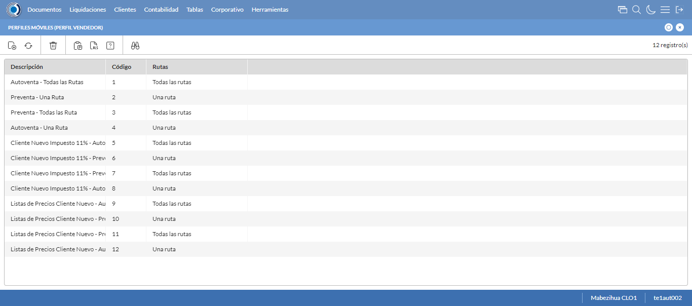
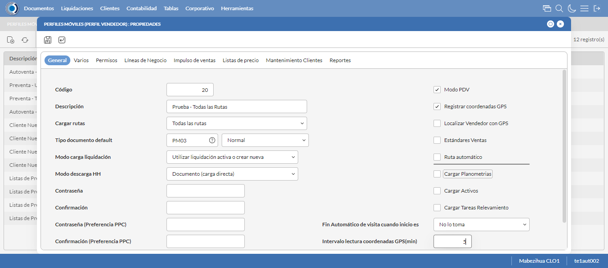
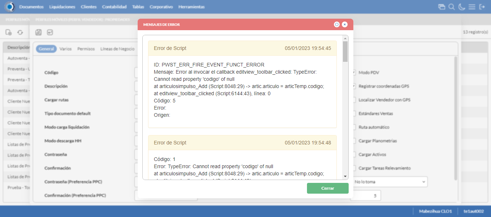
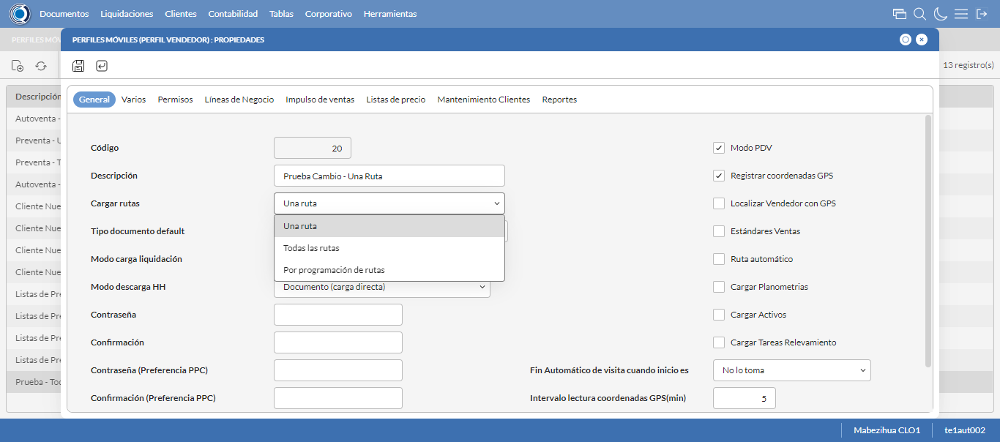
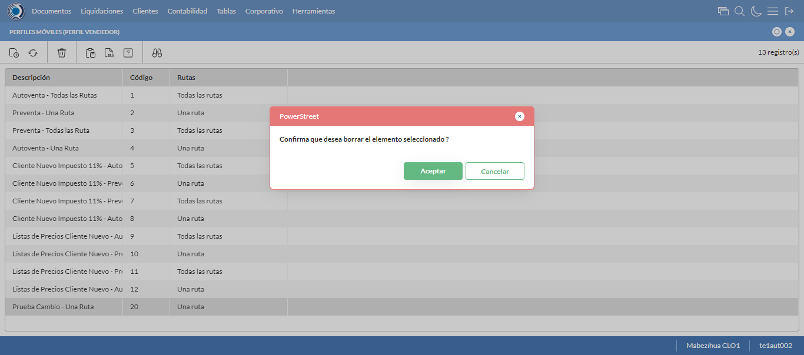

Desarrollado por : Area de Testing PWST
Fecha y hora de inicio : 2023-01-05 13:53:43
Duracion : 0:02:25.034142
Resultado : Total 8，Correctos 7 ，Errores 1 ，Taza de resultado 87.50%
Resumen 87.50% Errores 1 Fallidos 0 Correctos 7 Test realizados 8
| Caso de Prueba | Total | Correctos | Fallido | Error | Detalles | Captura del error |
| PerfilesMoviles.Test: Escenario 1 de Perfiles Moviles | 8 | 7 | 0 | 1 | Detalles | |
test |
ft1_1: 2023-01-05 13:53:44,521 - root - INFO - Se abre el chrome
2023-01-05 13:53:49,216 - root - INFO - Entra a la URL
2023-01-05 13:53:49,348 - root - INFO - Maximiza la pantalla
Traceback (most recent call last):
File "C:\Users\gerar\AppData\Local\Programs\Python\Python311\Lib\site-packages\selenium\webdriver\remote\switch_to.py", line 88, in frame
frame_reference = self._driver.find_element(By.ID, frame_reference)
^^^^^^^^^^^^^^^^^^^^^^^^^^^^^^^^^^^^^^^^^^^^^^^^^
File "C:\Users\gerar\AppData\Local\Programs\Python\Python311\Lib\site-packages\selenium\webdriver\remote\webdriver.py", line 861, in find_element
return self.execute(Command.FIND_ELEMENT, {"using": by, "value": value})["value"]
^^^^^^^^^^^^^^^^^^^^^^^^^^^^^^^^^^^^^^^^^^^^^^^^^^^^^^^^^^^^^^^^^
File "C:\Users\gerar\AppData\Local\Programs\Python\Python311\Lib\site-packages\selenium\webdriver\remote\webdriver.py", line 444, in execute
self.error_handler.check_response(response)
File "C:\Users\gerar\AppData\Local\Programs\Python\Python311\Lib\site-packages\selenium\webdriver\remote\errorhandler.py", line 249, in check_response
raise exception_class(message, screen, stacktrace)
selenium.common.exceptions.NoSuchElementException: Message: no such element: Unable to locate element: {"method":"css selector","selector":"[id="mainFrame"]"}
(Session info: chrome=108.0.5359.125)
Stacktrace:
Backtrace:
(No symbol) [0x0069F243]
(No symbol) [0x00627FD1]
(No symbol) [0x0051D04D]
(No symbol) [0x0054C0B0]
(No symbol) [0x0054C22B]
(No symbol) [0x0057E612]
(No symbol) [0x005685D4]
(No symbol) [0x0057C9EB]
(No symbol) [0x00568386]
(No symbol) [0x0054163C]
(No symbol) [0x0054269D]
GetHandleVerifier [0x00939A22+2655074]
GetHandleVerifier [0x0092CA24+2601828]
GetHandleVerifier [0x00748C0A+619850]
GetHandleVerifier [0x00747830+614768]
(No symbol) [0x006305FC]
(No symbol) [0x00635968]
(No symbol) [0x00635A55]
(No symbol) [0x0064051B]
BaseThreadInitThunk [0x76347D69+25]
RtlInitializeExceptionChain [0x7731BB9B+107]
RtlClearBits [0x7731BB1F+191]
During handling of the above exception, another exception occurred:
Traceback (most recent call last):
File "C:\Users\gerar\AppData\Local\Programs\Python\Python311\Lib\site-packages\selenium\webdriver\remote\switch_to.py", line 91, in frame
frame_reference = self._driver.find_element(By.NAME, frame_reference)
^^^^^^^^^^^^^^^^^^^^^^^^^^^^^^^^^^^^^^^^^^^^^^^^^^^
File "C:\Users\gerar\AppData\Local\Programs\Python\Python311\Lib\site-packages\selenium\webdriver\remote\webdriver.py", line 861, in find_element
return self.execute(Command.FIND_ELEMENT, {"using": by, "value": value})["value"]
^^^^^^^^^^^^^^^^^^^^^^^^^^^^^^^^^^^^^^^^^^^^^^^^^^^^^^^^^^^^^^^^^
File "C:\Users\gerar\AppData\Local\Programs\Python\Python311\Lib\site-packages\selenium\webdriver\remote\webdriver.py", line 444, in execute
self.error_handler.check_response(response)
File "C:\Users\gerar\AppData\Local\Programs\Python\Python311\Lib\site-packages\selenium\webdriver\remote\errorhandler.py", line 249, in check_response
raise exception_class(message, screen, stacktrace)
selenium.common.exceptions.NoSuchElementException: Message: no such element: Unable to locate element: {"method":"css selector","selector":"[name="mainFrame"]"}
(Session info: chrome=108.0.5359.125)
Stacktrace:
Backtrace:
(No symbol) [0x0069F243]
(No symbol) [0x00627FD1]
(No symbol) [0x0051D04D]
(No symbol) [0x0054C0B0]
(No symbol) [0x0054C22B]
(No symbol) [0x0057E612]
(No symbol) [0x005685D4]
(No symbol) [0x0057C9EB]
(No symbol) [0x00568386]
(No symbol) [0x0054163C]
(No symbol) [0x0054269D]
GetHandleVerifier [0x00939A22+2655074]
GetHandleVerifier [0x0092CA24+2601828]
GetHandleVerifier [0x00748C0A+619850]
GetHandleVerifier [0x00747830+614768]
(No symbol) [0x006305FC]
(No symbol) [0x00635968]
(No symbol) [0x00635A55]
(No symbol) [0x0064051B]
BaseThreadInitThunk [0x76347D69+25]
RtlInitializeExceptionChain [0x7731BB9B+107]
RtlClearBits [0x7731BB1F+191]
During handling of the above exception, another exception occurred:
Traceback (most recent call last):
File "C:\xampp\htdocs\versiones\automatizaciones\AutoPWST\01PM\testCase\PerfilesMoviles.py", line 30, in test
self.driver.switch_to.frame("mainFrame")
File "C:\Users\gerar\AppData\Local\Programs\Python\Python311\Lib\site-packages\selenium\webdriver\remote\switch_to.py", line 93, in frame
raise NoSuchFrameException(frame_reference)
selenium.common.exceptions.NoSuchFrameException: Message: mainFrame
|
|
||||
test_000: Ingresa a la base de datos |
pt1_2: 2023-01-05 13:53:52,480 - root - INFO - Escribe el usuario
2023-01-05 13:53:52,562 - root - INFO - Escribe la contraseña
2023-01-05 13:53:52,629 - root - INFO - Se dio clic en el boton ingresar
2023-01-05 13:53:54,880 - root - INFO - Ejecutar Enterprise
2023-01-05 13:53:58,918 - root - INFO - Cambia entre pestañas
|
|
||||
test_001: Abre menu y ejecuta pantalla |
pt1_3: 2023-01-05 13:54:18,677 - root - INFO - Abre la pantalla de Perfiles Moviles
2023-01-05 13:54:20,246 - root - INFO - La pantalla ejecutada es Perfiles Moviles
2023-01-05 13:54:20,246 - root - INFO - Captura: C:\xampp\htdocs\versiones\automatizaciones\AutoPWST\01PM\report\img screen：20230105_13_54_20.png
2023-01-05 13:54:20,382 - root - INFO - Se presiona el boton 'Nuevo', para crear un nuevo registro.
|
 | ||||
test_002: Abre la ventana de nuevo y crear un registro |
pt1_4: 2023-01-05 13:54:22,455 - root - INFO - Se abrio la pantalla para el ingreso de un registro nuevo.
2023-01-05 13:54:22,496 - root - INFO - Ingresa el codigo del nuevo registro
2023-01-05 13:54:22,579 - root - INFO - Ingresa la Descripcion del nuevo registro
2023-01-05 13:54:22,940 - root - INFO - Se selecciono la opción Todas las Rutas
2023-01-05 13:54:23,002 - root - INFO - Ingresa el Tipo documento default del nuevo registro
2023-01-05 13:54:23,328 - root - INFO - Se selecciono la opción Normal
2023-01-05 13:54:23,922 - root - INFO - Se selecciono el registro de Modo carga liquidación
2023-01-05 13:54:24,570 - root - INFO - Se selecciono la opción Documento (carga directa)
2023-01-05 13:54:24,619 - root - INFO - Se dió click en el checkbox Modo PDV
2023-01-05 13:54:24,674 - root - INFO - Se dió click en el checkbox Registrar coordenadas GPS
2023-01-05 13:54:25,006 - root - INFO - Se dió click en la opción No lo toma
2023-01-05 13:54:25,064 - root - INFO - Ingresa el Intervalo lectura coordenadas GPS(min) del nuevo registro
2023-01-05 13:54:25,065 - root - INFO - Captura: C:\xampp\htdocs\versiones\automatizaciones\AutoPWST\01PM\report\img screen：20230105_13_54_25.png
2023-01-05 13:54:27,255 - root - INFO - Se hace el cambio de pestaña Varios para continuar con el registro nuevo
2023-01-05 13:54:27,300 - root - INFO - Se dió click en el checkbox Cargar resumen de cuentas únicamente del vendedor de la ruta
2023-01-05 13:54:27,348 - root - INFO - Se dió click en el checkbox Verificar límite de crédito
2023-01-05 13:54:27,395 - root - INFO - Se dió click en el checkbox Verificar opción 'guardar como' del tipo de documento
2023-01-05 13:54:27,445 - root - INFO - Se dió click en el checkbox Permitir Pagos
2023-01-05 13:54:28,501 - root - INFO - Se dió click en el botón espacio para mover la pantalla hacía abajo
2023-01-05 13:54:29,848 - root - INFO - Se selecciono el registro de Disco de Datos
2023-01-05 13:54:30,502 - root - INFO - Se dió click en la opción Autoventa
2023-01-05 13:54:30,553 - root - INFO - Se dió click en el checkbox Enviar documentos de inmediato al servidor.
2023-01-05 13:54:30,596 - root - INFO - Se hace el cambio a la pestaña Permisos para continuar con el registro nuevo
2023-01-05 13:54:31,671 - root - INFO - Se presiona el boton 'Nuevo de la pestaña Permiso' , para crear un nuevo registro.
2023-01-05 13:54:33,070 - root - INFO - Se dió click en la opción Inihibir Georeferenciación
2023-01-05 13:54:33,123 - root - INFO - Se presiona el boton 'Guardar de la pestaña Permiso', para guardar el registro.
2023-01-05 13:54:33,772 - root - INFO - Se hace el cambio a la pestaña Lineas de Negocio para continuar con el registro nuevo
2023-01-05 13:54:34,853 - root - INFO - Se presiona el boton 'Nuevo de la pestaña Permiso' , para crear un nuevo registro.
2023-01-05 13:54:36,738 - root - INFO - Se selecciono el registro de Linea de negocio
2023-01-05 13:54:37,171 - root - INFO - Se presiona el boton 'Guardar de la pestaña Linea de Negocio', para guardar el registro.
2023-01-05 13:54:38,103 - root - INFO - Se presiona el boton 'Nuevo de la pestaña Permiso' , para crear un nuevo registro.
2023-01-05 13:54:40,488 - root - INFO - Se selecciono el registro de Linea de negocio
2023-01-05 13:54:40,793 - root - INFO - Se presiona el boton 'Guardar de la pestaña Linea de Negocio', para guardar el registro.
2023-01-05 13:54:41,220 - root - INFO - Se presiona el boton 'Nuevo de la pestaña Permiso' , para crear un nuevo registro.
2023-01-05 13:54:42,600 - root - INFO - Se selecciono el registro de Linea de negocio
2023-01-05 13:54:43,538 - root - INFO - Se presiona el boton 'Guardar de la pestaña Linea de Negocio', para guardar el registro.
2023-01-05 13:54:43,976 - root - INFO - Se hace el cambio a la pestaña Impulso Ventas para continuar con el registro nuevo
2023-01-05 13:54:44,550 - root - INFO - Se presiona el boton 'Nuevo de la pestaña Impulso de Ventas' , para crear un nuevo registro.
2023-01-05 13:54:45,123 - root - INFO - Ingresa el Articulo del nuevo registro
2023-01-05 13:54:47,205 - root - INFO - Se presiona el boton 'Guardar de la pestaña Impulso de Ventas', para guardar el registro.
2023-01-05 13:54:49,244 - root - INFO - Se presiona el boton 'Nuevo de la pestaña Impulso de Ventas' , para crear un nuevo registro.
2023-01-05 13:54:50,325 - root - INFO - Ingresa el Articulo del nuevo registro
2023-01-05 13:54:52,415 - root - INFO - Se presiona el boton 'Guardar de la pestaña Impulso de Ventas', para guardar el registro.
2023-01-05 13:54:54,467 - root - INFO - Se presiona el boton 'Nuevo de la pestaña Impulso de Ventas' , para crear un nuevo registro.
2023-01-05 13:54:55,056 - root - INFO - Ingresa el Articulo del nuevo registro
2023-01-05 13:54:57,146 - root - INFO - Se presiona el boton 'Guardar de la pestaña Impulso de Ventas', para guardar el registro.
2023-01-05 13:54:59,186 - root - INFO - Se presiona el boton 'Nuevo de la pestaña Impulso de Ventas' , para crear un nuevo registro.
2023-01-05 13:54:59,789 - root - INFO - Ingresa el Articulo del nuevo registro
2023-01-05 13:55:01,903 - root - INFO - Se presiona el boton 'Guardar de la pestaña Impulso de Ventas', para guardar el registro.
2023-01-05 13:55:03,943 - root - INFO - Se presiona el boton 'Nuevo de la pestaña Impulso de Ventas' , para crear un nuevo registro.
2023-01-05 13:55:04,537 - root - INFO - Ingresa el Articulo del nuevo registro
2023-01-05 13:55:06,646 - root - INFO - Se presiona el boton 'Guardar de la pestaña Impulso de Ventas', para guardar el registro.
2023-01-05 13:55:08,718 - root - INFO - Se hace el cambio a la pestaña Mantenimiento Clientes para continuar con el registro nuevo
2023-01-05 13:55:09,302 - root - INFO - Se dió click en el checkbox Permiso agregar nuevos clientes
2023-01-05 13:55:09,355 - root - INFO - Se dió click en el checkbox Permiso modificar clientes existentes
2023-01-05 13:55:10,259 - root - INFO - Se selecciono el registro de Ruta Referencia
2023-01-05 13:55:10,539 - root - INFO - Se dió click en el checkbox Clasificación 1
2023-01-05 13:55:10,688 - root - INFO - Se dió click en el checkbox Clasificación 2
2023-01-05 13:55:10,832 - root - INFO - Se dió click en el checkbox Clasificación 3
2023-01-05 13:55:10,972 - root - INFO - Se dió click en el checkbox Colonia
2023-01-05 13:55:11,113 - root - INFO - Se dió click en el checkbox Codigo Postal
2023-01-05 13:55:11,733 - root - INFO - Se dió click en el checkbox Direccion
2023-01-05 13:55:11,889 - root - INFO - Se dió click en el checkbox Entorno PDV
2023-01-05 13:55:12,165 - root - INFO - Se dió click en el checkbox Esquina 1
2023-01-05 13:55:12,435 - root - INFO - Se dió click en el checkbox Esquina 2
2023-01-05 13:55:13,394 - root - INFO - Se dió click en el checkbox Paises
2023-01-05 13:55:13,536 - root - INFO - Se dió click en el checkbox Departamento
2023-01-05 13:55:13,671 - root - INFO - Se dió click en el checkbox Localidad
2023-01-05 13:55:13,869 - root - INFO - Se da clic en el boton Guardar; se debe crear un nuevo registro.
|
 | ||||
test_003: Repite el Registro |
pt1_5: 2023-01-05 13:55:14,548 - root - INFO - Se presiona el boton 'Refrescar', para crear un nuevo registro igual al anterior.
2023-01-05 13:55:16,614 - root - INFO - Se presiona el boton 'Nuevo', para crear un nuevo registro igual al anterior.
2023-01-05 13:55:17,665 - root - INFO - Se abrio la pantalla para el ingreso de un registro nuevo.
2023-01-05 13:55:17,710 - root - INFO - Ingresa el codigo del nuevo registro
2023-01-05 13:55:17,831 - root - INFO - Ingresa la Descripcion del nuevo registro
2023-01-05 13:55:18,177 - root - INFO - Se selecciono la opción Todas las Rutas
2023-01-05 13:55:18,246 - root - INFO - Ingresa el Tipo documento default del nuevo registro
2023-01-05 13:55:18,591 - root - INFO - Se selecciono la opción Normal
2023-01-05 13:55:19,390 - root - INFO - Se selecciono el registro de Modo carga liquidación
2023-01-05 13:55:19,729 - root - INFO - Se selecciono la opción Documento (carga directa)
2023-01-05 13:55:19,784 - root - INFO - Se dió click en el checkbox Modo PDV
2023-01-05 13:55:19,854 - root - INFO - Se dió click en el checkbox Registrar coordenadas GPS
2023-01-05 13:55:20,193 - root - INFO - Se dió click en la opción No lo toma
2023-01-05 13:55:20,255 - root - INFO - Ingresa el Intervalo lectura coordenadas GPS(min) del nuevo registro
2023-01-05 13:55:22,310 - root - INFO - Se da clic en el boton Guardar; NO se debe crear un nuevo registro.
2023-01-05 13:55:24,395 - root - INFO - Se da clic en el boton del mensaje de registro duplicado
2023-01-05 13:55:26,397 - root - INFO - Captura: C:\xampp\htdocs\versiones\automatizaciones\AutoPWST\01PM\report\img screen：20230105_13_55_26.png
2023-01-05 13:55:26,592 - root - INFO - Se presiona el boton 'Cerrar', para cerrar el mensaje de duplicidad de llave primaria
2023-01-05 13:55:26,765 - root - INFO - Se presiona el boton 'Cerrar', para cerrar la ventana
|
 | ||||
test_004: Modificar el registro |
pt1_6: 2023-01-05 13:55:26,942 - root - INFO - Se presiona el boton 'Refrescar', para proceder a modificar el registro.
2023-01-05 13:55:29,524 - root - INFO - Se da clic en el registro creado, para proceder a modificarlo.
2023-01-05 13:55:30,179 - root - INFO - Se modifica el contenido del campo Observaciones 1
2023-01-05 13:55:30,524 - root - INFO - Se selecciono la opción Una Ruta
2023-01-05 13:55:30,524 - root - INFO - Captura: C:\xampp\htdocs\versiones\automatizaciones\AutoPWST\01PM\report\img screen：20230105_13_55_30.png
2023-01-05 13:55:30,689 - root - INFO - Se hace el cambio de pestaña Permisos para continuar con la modificación del registro
2023-01-05 13:55:31,251 - root - INFO - Se presiona el boton 'Nuevo de la pestaña Permiso' , para crear un nuevo registro.
2023-01-05 13:55:32,130 - root - INFO - Se dió click en la opción Anular Documentos
2023-01-05 13:55:32,180 - root - INFO - Se presiona el boton 'Guardar de la pestaña Permiso', para guardar el registro.
2023-01-05 13:55:32,498 - root - INFO - Se hace el cambio a la pestaña Lineas de Negocio para continuar con la modificación del registro
2023-01-05 13:55:32,749 - root - INFO - Se hace el cambio de pestaña Impulso Ventas para continuar con la modificación del registro
2023-01-05 13:55:33,823 - root - INFO - Se da clic en el registro creado, para proceder a modificarlo.
2023-01-05 13:55:33,886 - root - INFO - Se presiona el boton 'Eliminar de Impulso Ventas', para eliminar el primer registro.
2023-01-05 13:55:35,454 - root - INFO - Se da clic en el registro creado, para proceder a modificarlo.
2023-01-05 13:55:35,510 - root - INFO - Se presiona el boton 'Eliminar de Impulso Ventas', para eliminar el segundo registro.
2023-01-05 13:55:37,062 - root - INFO - Se da clic en el registro creado, para proceder a modificarlo.
2023-01-05 13:55:37,102 - root - INFO - Se presiona el boton 'Eliminar de Impulso Ventas', para eliminar el tercer registro.
2023-01-05 13:55:38,673 - root - INFO - Se da clic en el registro creado, para proceder a modificarlo.
2023-01-05 13:55:38,713 - root - INFO - Se presiona el boton 'Eliminar de Impulso Ventas', para eliminar el cuarto registro.
2023-01-05 13:55:40,265 - root - INFO - Se da clic en el registro creado, para proceder a modificarlo.
2023-01-05 13:55:40,300 - root - INFO - Se presiona el boton 'Eliminar de Impulso Ventas', para eliminar el quinto registro.
2023-01-05 13:55:41,355 - root - INFO - Se da clic en el boton Guardar; se debe modificar la informacion del registro.
|
 | ||||
test_005: Eliminar el registro creado |
pt1_7: 2023-01-05 13:55:41,966 - root - INFO - Se presiona el boton 'Refrescar', para proceder a eliminar el registro.
2023-01-05 13:55:44,516 - root - INFO - Se da clic en el registro creado, para proceder a eliminarlo.
2023-01-05 13:55:45,614 - root - INFO - Se hace el cambio de pestaña Permisos para continuar con la eliminación del registro
2023-01-05 13:55:46,674 - root - INFO - Se da clic en el primer registro de Permisos, para proceder a eliminarlo.
2023-01-05 13:55:46,735 - root - INFO - Se presiona el boton 'Eliminar de Permiso', para eliminar el segundo registro.
2023-01-05 13:55:48,290 - root - INFO - Se da clic en el segundo registro de Permisos, para proceder a Eliminarlo.
2023-01-05 13:55:48,327 - root - INFO - Se presiona el boton 'Eliminar de Permiso', para eliminar el segundo registro.
2023-01-05 13:55:49,377 - root - INFO - Se hace el cambio a la pestaña Lineas de Negocio para continuar con la eliminación del registro
2023-01-05 13:55:50,953 - root - INFO - Se da clic en el primer registro de Linea de Negocio, para proceder a Eliminarlo.
2023-01-05 13:55:50,997 - root - INFO - Se presiona el boton 'Eliminar de Linea de Negocio', para eliminar el primer registro.
2023-01-05 13:55:52,548 - root - INFO - Se da clic en el segundo registro Linea de negocio, para proceder a Eliminarlo.
2023-01-05 13:55:52,592 - root - INFO - Se presiona el boton 'Eliminar de Linea de Negocio', para eliminar el segundo registro.
2023-01-05 13:55:54,149 - root - INFO - Se da clic en el tercer registro Lineas de Negocio, para proceder a Eliminarlo.
2023-01-05 13:55:54,185 - root - INFO - Se presiona el boton 'Eliminar de Linea de Negocio', para eliminar el tercer registro.
2023-01-05 13:55:55,236 - root - INFO - Se hace el cambio a la pestaña Mantenimiento Clientes para continuar con la eliminación del registro
2023-01-05 13:55:55,817 - root - INFO - Se dió click en el checkbox Clasificación 1
2023-01-05 13:55:55,959 - root - INFO - Se dió click en el checkbox Clasificación 2
2023-01-05 13:55:56,097 - root - INFO - Se dió click en el checkbox Clasificación 3
2023-01-05 13:55:56,279 - root - INFO - Se dió click en el checkbox Colonia
2023-01-05 13:55:56,475 - root - INFO - Se dió click en el checkbox Codigo Postal
2023-01-05 13:55:56,661 - root - INFO - Se dió click en el checkbox Direccion
2023-01-05 13:55:56,799 - root - INFO - Se dió click en el checkbox Entorno PDV
2023-01-05 13:55:56,991 - root - INFO - Se dió click en el checkbox Esquina 1
2023-01-05 13:55:57,171 - root - INFO - Se dió click en el checkbox Esquina 2
2023-01-05 13:55:57,323 - root - INFO - Se dió click en el checkbox Paises
2023-01-05 13:55:57,508 - root - INFO - Se dió click en el checkbox Departamento
2023-01-05 13:55:57,680 - root - INFO - Se dió click en el checkbox Localidad
2023-01-05 13:55:57,842 - root - INFO - Se da clic en el boton Guardar; se debe modificar la informacion del registro.
2023-01-05 13:55:58,403 - root - INFO - Se da clic en el registro creado, para proceder a eliminarlo.
2023-01-05 13:55:58,458 - root - INFO - Se presiona el boton 'Eliminar', para eliminar el registro.
2023-01-05 13:56:00,459 - root - INFO - Captura: C:\xampp\htdocs\versiones\automatizaciones\AutoPWST\01PM\report\img screen：20230105_13_56_00.png
2023-01-05 13:56:00,607 - root - INFO - Se confirma el eliminado del registro
2023-01-05 13:56:01,452 - root - INFO - Se presiona el boton 'Refrescar', para verificar si el registro ha sido eliminado.
2023-01-05 13:56:03,497 - root - INFO - Se presiona el boton 'Cerrar', para cerrar la pantalla de Perfiles Moviles.
|
 | ||||
test_006: Cerrar_Navegador |
pt1_8: 2023-01-05 13:56:08,055 - root - INFO - Se cierra chrome
|
|
||||
| Caso de prueba | 8 | 7 | 0 | 1 | Taza de resultado：87.50% | |